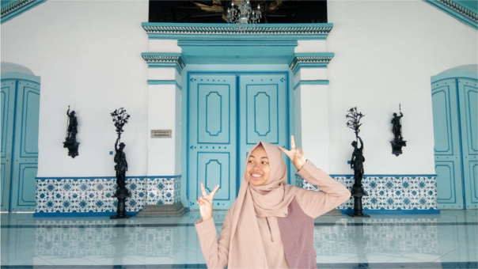

Halo... Nama saya Tania Annisa Fitri. Tetapi, orang tua saya memanggil saya dengan nama kecil yang mereka berikan yaitu Anis. Teman-teman saya juga memanggil saya dengan nama kecil yang mereka berikan yaitu TB. Apa coba TB? Mereka bilang sih TB itu singkatan dari Tania Bohay. Saya lahir di Bogor, 16 Agustus 2001. Saya merupakan anak pertama dari dua bersaudara. Saat ini saya sedang menempuh pendidikan di SMK-SMAK BOGOR. Sekarang saya sedang menempuh semester IV dan jika sesuai dengan program sekolah saya akan lulus pada tahun 2020. Semoga Allah memudahkan jalan saya untuk lulus dengan baik dari SMK-SMAK BOGOR yang tercinta ini :)

Hobi saya adalah Travelling. Kenapa saya suka Travelling? Karena Travelling dapat menyegarkan pikiran dan menumbuhkan semangat baru untuk menjalani aktivitas sehari-hari. Lagipula Travelling itu sangat dibutuhkan loh... Terutama bagi saya sendiri yang sebagai siswa SMK-SMAK BOGOR yang aktivitasnya selalu padat. Travelling juga dapat menambah pengetahuan kita tentang dunia, sehingga kita menjadi berwawasan lebih :)